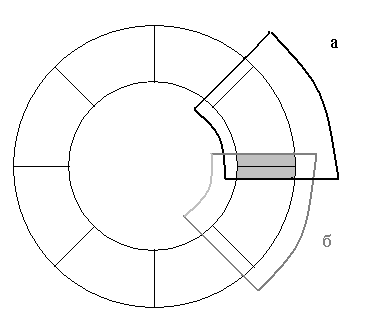
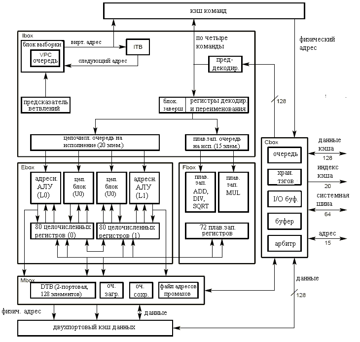
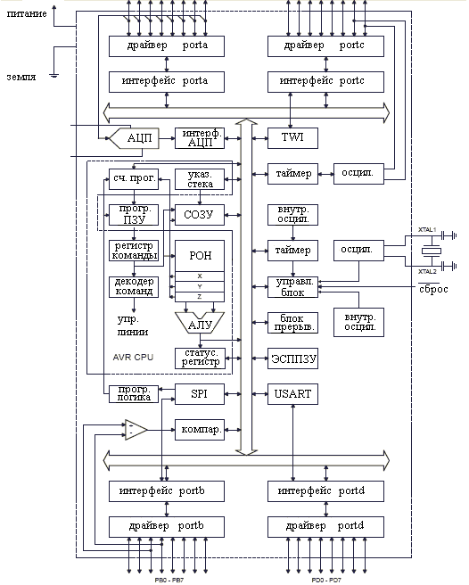
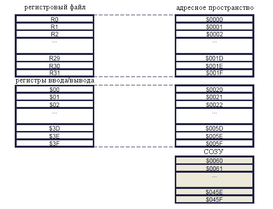

Архитектура RISC (Reduced Instruction Set Code, архитектура с уменьшенным числом команд)[1, 2] возникла в 1980 году, хотя, фактически некоторые из ее принципов были реализованы ранее в ВС CDC 6600 еще в 1964 году и IBM 801 в 1975 году. Основные принципы, заложенные в эту архитектуру, - уменьшение числа команд и их сложности и увеличение размера регистровой памяти процессора.
В 60-х годах стоимость оперативной памяти была высока, ее объем мал. Этот ресурс был узким местом, и его старались максимально экономить. Для уменьшения размеров кода программ создавались ВС с огромными наборами команд (IBM SYSTEM 360). Ретроспективно такую архитектуру назвали CISC (архитектура со сложным набором команд). Число команд в CISC достигает нескольких сотен (303 для DEC VAX 11/780). Сложные команды заставляли процессор выполнять несколько операций. Например, сначала происходила загрузка операндов из памяти. Потом совершалась арифметическая операция. Наконец, результат записывался в память обратно. Одна команда обработки строки могла многократно повторять загрузку, обработку и выгрузку элемента строки. Любая команда позволяла загружать свои операнды и сохранять результаты из памяти, используя при этом любой доступный режим адресации. Размер команд варьировался от одного до нескольких байт. Время выполнения команд на CISC процессорах также отличалось для разных команд. Минимальное время исполнения - 1 такт (например, команда сложения на регистрах). Максимальное время исполнения на некоторых процессорах могло занимать более 100 тактов (например, команда деления). Более половины схем в процессорах отвечало за декодирование и исполнение команд. Переход от процессоров, реализованных на тот момент как одна или много печатных плат, к микропроцессорам в начале 70-х годов с точки зрения архитектуры CISC и ее свойств ничего не изменил. Микропроцессоры унаследовали сложный набор команд, который и дальше продолжил усложняться по мере эволюции CISC микропроцессоров (от 74 команд в Intel 8080 до 235 команд в Intel Pentium). Площадь на кристалле для схем блоков декодирования и исполнения команд была много больше, чем для регистров и буферов.
К началу 80-х годов произошло три события. Во-первых, большая часть программ стала создаваться с использованием языков высокого уровня сильно возросла. Во-вторых, стоимость памяти упала, размеры сильно увеличились. И, наконец, скорость обработки данных в микропроцессорах увеличивалась существенно быстрее, чем скорость доступа к памяти. Эти изменения привели к тому, что эффективность использования CISC микропроцессоров упала.
Умелое использование сложных команд позволяло сократить размер кода программ. Однако, это было доступно программисту при программировании на языке ассемблера. Компиляторы с языков высокого уровня в то время было неспособны эффективно использовать большой набор сложных команд. Разработчики процессоров провели анализ частоты выполнения команд программами в машинах на базе CISC процессоров. В результате было установлено, что большую часть времени используется только 20% команд. С другой стороны, при увеличении размера памяти экономия на размере кода программ перестала быть значимой. Кроме этого, выяснилось, что сложная и редко используемая команда часто исполняется медленнее, чем набор простых команд на том же процессоре, которые выполняют ту же работу. Это вызвано тем, что при большом числе команд разработчки микропроцессора не могут качественно оптимизировать реализации всех команд. Они больше времени уделяют самым важным командам.
CISC микропроцессоры имели мало регистров памяти. Программы могли сохранять в них только малую часть обрабатываемых данных. Из-за этого быстрый CISC процессор часто простаивал, ожидая загрузки требуемых данных из медленной памяти.
Получилось, что, с одной стороны, на кристале CISC микропроцессора отводилось много места для схем исполнения не очень нужных команд. С другой стороны, выделялось мало места для регистров и буферов, позволявших уменьшать число доступов к памяти.
При разработке RISC архитектуры было решено использовать минимальное число команд, без которых нельзя обойтись. Например, в первой успешной RISC ВС, Sun SPARCStation [3], было всего 52 команды. В RISC процессорах обращение к памяти возможно только с помощью отдельных команд загрузки (load) и сохранения (store). Операндами арифметических, логических и побитовых команд могут быть только данные из регистров процессора или константы, закодированные в самих командах. Размер всех команд одного микропроцессора фиксирован. Время исполнения команды почти всегда занимает только 1 такт. Такие ограничения дали возможность сильно упростить микропроцессор, в частности блоки декодирования и исполнения, увеличить тактовую частоту. Это дает ряд преимуществ:
1) уменьшение размеров кристалла микропроцессора или увеличение площади, которую можно выделить для регистров и буферов;
2) увеличение быстродействия микропроцессора;
3) понижение потребляемой мощности и удешевление микропроцессора;
4) упрощение создания компилятора, генерирующего эффективный код.
В RISC микропроцессорах облегчается реализация механизмов ковейерной обработки, предварительной выборки команд. Простые команды процессора выполняют одну операцию, а не несколько, как в CISC. Это исключает необходимость использования микропрограммного управления, когда одна команда на макроуровне выполняется последовательностью микрокоманд.
Основной недостаток уменьшения числа команд и их упрощения - увеличение размера кода программ. Это может отрицательно сказаться на производительности ВС, так как требуется больше обращений к памяти для загрузки кода.
Увеличение размера регистровой памяти процессора - вторая черта RISC. Вместо нескольких регистров в CISC, RISC процессор имеет большой регистровый файл (32 в Atmel Mega16, 128 в Sun SPARC). В CISC микропроцессоре Intel Pentium 8 регистров общего назначения.
Логическая организация регистрового файла RISC микропроцессоров разрабатывалась с учетом требований программ, написанных на языках высокого уровня. Такие программы имеют модульную структуру. Элементом модульной структуры на нижнем уровня является подпрограмма. При исполнении программы одни подпрограммы вызывают другие, передавая им через стек аргументы, и получая через него же результаты. В стеке также хранятся локальные переменные для обрабатываемых подпрограммами данных. Часть регистрового файла доступна всегда. Другая часть делится на пересекающиеся области (см. рис. 1). В каждый момент времени программе доступна только одна область. При вызове подпрограммы видимое окно сдвигается на другую область регистров. Благодаря пересечению областей (показано серым цветом) вызывающая подпрограмма может записать в регистры параметры и прочитать результаты. Непересекающаяся часть используется для хранения локальных переменных. Таким образом, параметры и локальные переменные в RISC архитектуре сохраняются в регистрах. В CISC они располагалась в памяти, и доступ к ним происходил медленнее.

Рис. 1. Организация регистрового файла RISC процессоров
В микропроцессоре Sun SPARC размер регистрового файла - 128. Только восемь регистров доступны всегда. Остальные доступны через окно размером 24 регистра. Соседние области имеют восемь общих регистров.
Может возникнуть ситуация, когда вложенность вызовов подпрограмм большая, и весь регистровый файл занят. При очередном вызове данные из области регистрового файла, которая нужна вызываемой подпрограмме, сохраняются в память, и эту область можно использовать. Организация регистрового файла в RISC эффективна для таких программ, где вложенность вызовов обычно мала, а число локальных переменных - невелико. Эффективность падает для разнообразных рекурсивных алгоритмов и в случае, когда число локальных переменных велико.
Первой RISC системой стал суперкомпьютер CDC 6600, построенный в 1964 году. У него было всего 64 команды. Другими примерами ранних RISC систем являются миникомпьютер Data General Nova и IBM 801, оказавший влияние на архитектуру современных RISC процессоров IBM. В 1980-1983 в Калифорнийском Университете в Беркли проводился проект RISC. Хотя получившийся микропроцессор оказался медленнее современных ему CISC, на его основе в 1985 фирмой Sun Microsystems был построен микропроцессор SPARC. SPARC обладал очень высокой производительностью. На базе него были созданы рабочие станции Sun SPARCStation. RISC архитектура вытеснила CISC сначала для рабочих станций, а затем постепенно для всех остальных, включая суперкомпьютеры, встраиваемые ВС, игровые консоли. Единственное исключение - персональные компьютеры. Они по прежнему используют CISC процессоры архитектуры x86. Это связано не с преимуществами CISC для данного класса ВС, а с огромным количеством программ, разработанных для x86. Все основные производители микропроцессоров разработали микропроцессоры с архитектурой RISC (Sun: SPARC, UltraSPARC; IBM: PowerPC, Power, Cell; DEC: Alpha; MIPS: R2000, R4000. R8000, R10000, Intel: i860, i960) Хотя изначально RISC архитектура является попыткой упростить процессор увеличить производительность процессора за счет упрощения команд и уменьшения их числа, многие современные RISC процессоры имеют большое число команд. Например, в современном микропроцессоре ARM[4] есть несколько десятков одних только команд SIMD расширения для обработки аудио- и видеопотоков.
Процессор Alpha 21264 ev6[5, 6] имел высокую производительность и использовался для приложений с большими объемами вычислений.Процессор позволяет выполнять до четырех команд за один такт. Процессор имеет аппаратную поддержку страничной виртуальной памяти. Для ускорения обмена данными с памятью имеется два буфера по 32 слова. Размер шины данных - 64 бита.
Краткая справка по микропроцессору:
производитель DEC и Compaq
число выводов на корпусе 587
тип архитектуры RISC, суперскалярная конвейеризированная
размер машинного слова 64 бит
размер команды 32 бит
размер физического адреса 44 бит
размер виртуального адреса 48 или 43 бит (выбирается программно)
число регистров общего назначения 32 программно доступных, 160 физических

Рис. 2. Блоки микропроцессора Alpha 21264 ev6.
Процессор содержит следующие подсистемы (см. рис. 2):
1) выборки, запуска и завершения команд (Ibox);
2) целочисленных операций (Ebox);
3) операций с плавающей запятой (Fbox);
4) внутрикристальных кэшей команд и данных;
5) ссылок на память (Mbox);
6) системного интерфейса и интерфейса с внешним кэшем (Cbox);
7) последовательности операций конвейера.
Виртуальный счетчик программ (VPC) в Ibox содержит виртуальные адреса обрабатываемых команд. Всего может обрабатываются 80 команд в 20 блоках по четыре команды. Предсказатель ветвлений вычисляет более вероятный адрес следующей исполняемой команды после команды ветвления. Для этого он ведет для команд ветвления статистику, как часто происходил тот или иной переход. Для сохранения статистики используется три таблицы с общим объемом в несколько килобайт. Блок загрузки команд считывает из кэша команд группы из четырех команд. Эффективная работа предсказателя ветвлений невозможна, если в группе есть более одной команды ветвления. Карта переименования регистров выделяет командам разные аппаратные регистры, если они используют один и тот же программный регистр, но при этом между ними нет зависимости по данным (например, обе пишут в регистр). Это позволяет запустить на исполнение обе такие команды одновременно. Если же есть зависимость по данным (например, сначала одна команда пишет в регистр, затем другая читает из него), то зависимая команда дожидается завершения той, от которой зависит. Очередь запуска целочисленных команд запускает готовые к исполнению команды, которые исполняются в подсистеме Ebox. Она может запускать до четырех команд за один цикл. Очередь запуска команд с плавающей запятой запускает такие команды, которые исполняются в Fbox. Ibox загружает команду по их порядку в программе, далее может исполнять их не по порядку. Завершение их исполнения снова соответствует порядку в программе. При завершении команды результаты ее исполнения записываются (в зависимости от того, какая это команда) в регистры или память.
Подсистема целочисленных операций (Ebox) содержит два "кластера". Каждый кластер имеет регистровый файл на 80 регистров и двух арифметических-логических устройства (АЛУ). Кластеры имеют сумматоры, сдвигатели, два блока логических команд, конвейерный целочисленный умножитель (умножает за семь тактов) и блок для операций поиска минимума/максимума.
Fbox содержит регистровый файл из 72 физических регистров, конвейеризированный сумматор, конвейеризированный умножитель (умножает за четыре такта, что быстрее целочисленного умножения), неконвейеризированный блок деления и неконвейеризированный блок вычисления корня. Программно доступны только 32 регистр, остальные используются для реализации переименования.
Кэши команд и данных имеют размер 64Кб, сохраняют блоками по 64 байта.
Подсистема ссылок на память (Mbox) содержит очереди для загрузки и выгрузки данных, файл адресов промахов и буфер трансляции (DTB). Подсистема обеспечивает корректное исполнение команд загрузки и выгрузки данных.
Alpha 21264 ev6 обеспечивает работу с целочисленными данными разрядностей 8, 16, 32, 64 и с данными с плавающей запятой в нескольких форматах размером 32 и 64 бита. Программам доступна 32 целочисленных регистра (R0-R31) и 32 регистра для данных с плавающей запятой.(F0-F31). Реально их только по 31, так как R31 всегда содержит нуль, а F31 - не используется.
Команды Alpha 21264 ev6 делятся на группы:
1) целочисленная загрузка и сохранение (для 8-, 16-, 32- и 64-битовых целых и для адресов);
2) целочисленные управляющие (условное, безусловное ветвление, вызов и возврат из подпрограмм);
3) целочисленные арифметические (сложение, сравнение, умножение, вычитание);
4) логические и сдвиговые (логическое и, логическое или, исключающее или, логическое дополнение, сдвиг влево логический, сдвиг вправо логический, сдвиг вправо арифметический, условная пересылка целого CMOV);
5) манипуляция битами (сравнение байта, выделение/вставка/маскирование байта, 16-, 32-битового из 64-битового);
6) загрузка и сохранение с данными с плавающей запятой (для всех 32- и 64-битовых аппаратно поддерживаемых форматов);
7) ветвление с данными с плавающей запятой (ветвление по равенству, неравенству, больше, больше либо равно, меньше, меньше либо равно);
8) обработка и арифметические с данными с плавающей запятой (копирование знака, копирование экспоненты, преобразование формата, сложение, деление, умножение, корень, вычитание);
9) прочие (управление кэшем, работа с исключениями);
10) совместимые с VAX;
11) мультимедийные (графические и видео - упаковка и распаковка векторов, поиск минимума, поиск максимума);
При написании программ на языках высокого уровня оптимизация эффективно производится компилятором. При использовании языка ассемблера - это задача программиста. Он должен учитывать архитектурные особенности микропроцессора Alpha 21264 ev6. Для быстрого исполнения необходимо правильно подбирать команды в группах по четыре. Два ветвления подряд делают невозможным предсказание ветвления. Две команды, использующие конвейризированный умножитель в Fbox, не могут одновременно исполняться на одном такте. А две целочисленные и одна команда для Fbox могут быть исполнены одновременно, если между ними нет зависимости по данным. Целочисленные расчеты с умножением выполняются медленнее, чем умножение в Fbox. Иногда можно ускорить вычисления, если переводить данные из целого в формат с плавающей запятой, проводить расчеты, а потом переводить обратно в целочисленный формат.
На базе Alpha 21264 ev6 были построены высокопроизводительные ВС для научных расчетов. Фирмами DEC и Compaq разработаны оптимизирующие компиляторы для Fortan и C.
Микропроцессор ATmega16 [7], производимый фирмой Atmel - один из самых простых и недорогих (цена около 1 доллара). Он расчитан на применение во встраиваемых системах. Имеет 8-битную архитектуру. Потребляемая мощность - всего несколько мВт. При пониженной тактовой частоте потребляет пропорционально меньшую мощность. Как и многие другие микропроцессоры для встраиваемых применений, ATmega имеет Гарвардскую архитектуру.
Краткая справка по микропроцессору:
производитель Atmel
число выводов на корпусе 40 или 44 (в зависимости от вида корпуса)
тип архитектуры RISC+Гарвардская
размер машинного слова 8 бит
общее число команд 131
число регистров общего назначения 32
тактовая частота 16МГц

Рис. 3. Блоки микропроцессора ATmega16.
Микропроцессор включает следующие блоки (см. рис. 3):
1) набор регистров общего назначения (РОН): 32 8-разрядных регистра;
2) регистры указателя текущей команды, вершины стека, статусный;
3) арифметическое-логическое устройство;
4) регистр команды и декодер команды;
5) интерфейсные схемы для четырех двунаправленных портов передачи данных (port A - port D);
6) 8-битная шина передачи данных.
Так как микропроцессор служит для встраиваемых применений, он включает в себя не только традиционный для микропроцессоров набор блоков, но и блоки для оцифровки сигнала (АЦП), внутренний осцилятор, несколько таймеров/счетчиков, статическое ОЗУ размером 1Кб, ППЗУ для программ размером 16Кб, ППЗУ для данных (512 байт), аналоговый компаратор, интерфейсы SPI, TWI и последовательный, модулятор импульсов по ширине. Наличие этих блоков в самом микропроцессоре позволяет строить на его основе очень компактные и дешевые встраиваемые системы без внешних интегральных схем памяти, АЦП и интерфейсов. Для управления этими блоками и обмена данными с ними в микропроцессоре, кроме 32 регистров общего назначения, есть 64 регистра ввода/вывода. Статусный регистр, регистр маски прерывания и прочие всевозможные регистры специального назначения также отнесены к регистрам ввода/вывода.

Рис. 4. Адресное пространство данных.
Все регистры общего назначения доступны. В микропроцессоре нет скользящего окна. Стек организуется в статическом ОЗУ. Адресное пространство памяти (см. рис. 4) данных устроено так, что с помощью команд работы с памятью можно обращаться к регистрам общего назначения и регистрам ввода/вывода. Эти регистры занимают нижнюю часть адресов. Первая ячейка памяти СОЗУ имеет адрес $0060.
На каждом такте обычно исполняется одна команда. При этом происходят следующие действия. Сначала из регистра указателя текущей команды (сч.прог.) считывается адрес команды для исполнения. По этому адресу из ППЗУ для программ (прогр. ПЗУ) считывается код команды. Он помещается в регистр команды. Декодер команд по коду команды формирует управляющие сигналы для АЛУ и других блоков. Они различны для разных кодов команд. Например, для команды сложения (ADD Rd,Rr), значения из двух регистров (Rd, Rr) подаются в АЛУ, там они складываются. Результат возвращается в регистр Rd. В зависимости от результирующего значения выставлятся или сбрасываются флаги (отдельные биты статусного регистра), например флаг равенства нулю и флаг переноса. В завершение, происходит увеличение значения регистра указателя текущей команды на единицу, чтобы на следующем такте исполнялась следующая команда.
Некоторые команды ATmega16 выполняются за несколько тактов. За два такта выполняются арифметические команды с 16-битными данными (ADIW, SBIW), команды умножения (MUL, MULS, MULSU, FMUL, FMULS, FMULSU), некоторые команды перехода (RJMP, IJMP). Небольшое количество команд выполняется за 3 или 4 такта (CALL, RET, RETI).
Atmel ATmega16 - представитель семейства процессоров AVR8, которое является одним из самых распространенных во встраиваемых системах, не требующих интенсивной обработки данных. Наряду с ассемблером от Atmel, для этих процессоров разработан ряд компиляторов с C.
[1] Null L., Lobur J. - The Essentials of Computer Organization and Architecture. - Jones and Bartlett Publishers. - 2003
[2] Reduced instruction set computer. - http://en.wikipedia.org/wiki/RISC
[3] SPARC. - http://en.wikipedia.org/wiki/SPARC
[4] http://infocenter.arm.com/
[5] Alpha 21264/EV6 Microprocessor Hardware Reference Manual. - Compaq. - 2000
[6] Alpha Architecture Handbook. - Compaq. - 1998
[7] Atmel 8-bit AVR Microcontroller with 16K bytes In-System Programmable Flash. ATmega16, ATmega16L. - Atmel corp. - 2007. - http://www.atmel.com/dyn/resources/prod_documents/doc2466.pdf